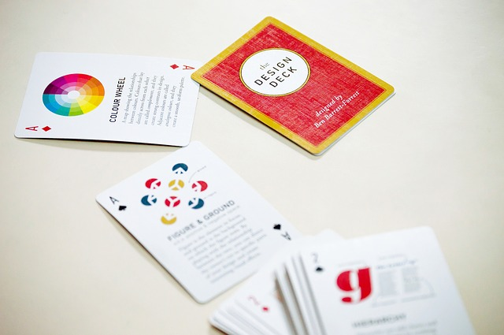

Political Website Fundamental Color Theory
by Bob Brady
Posted on 17-05-2021 10:42 PM

An Introduction to Color Theory for Web Designers
Color theory is the practice of using the meaning behind colors to bring about a sensory experience. This practice can be applied to web design with some knowledge and thought. People will often disagree about what certain colors mean and what colors designers should use to implore a certain emotion. However, what can’t be argued is that consumers do have emotional responses to colors.
The color wheel is a circle containing all the basic colors. Look at it, we can learn the relationship between them. It’s known as the fundamental theory to choose colors for every aspect of life. For example, choosing color for clothes, furniture, art, … particularly, applying the color wheel is important not only for professional designers but also for those who want to own a beautiful website. A website contains different elements and they absolutely have more than only one color, so you surely need to combine them. Therefore, using the color wheel will ensure the harmony of all the colors and highlight the desirable, making your website gorgeous and prominent.
Now let’s dive into how designers can use color theory to enhance their projects. Think about the last time you filled out a contact form on a website. Miss a field, and a red error message likely pops up. On the contrary, if you need to re-enter a password for verification, and you enter everything correctly, a green message signals you to proceed. In this case, not only does color communicate how to use your product, but also draws on psychology to evoke emotional responses (green = good, red = bad).
Sir Isaac Newton’s Influence on the Color Wheel
Sir isaac newton probably didn't imagine how much of an influence his color wheel studies would have on the worlds of art and interior design. The next time you find yourself wanting to repaint a room in your house, you might find yourself standing in front of thousands of paint samples. By using a color wheel, you can figure out which colors would look good next to each other and which would look good on your walls. You can also decide how vivid you want that color by shading or tinting it.